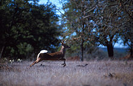
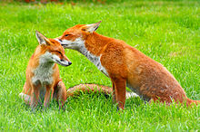
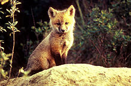
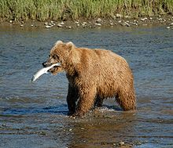

Animali del bosco

Scoiattolo
E l'animale del bosco piu noto e simpatico tra i roditori, non e aggressivo, ma non ama la compagnia di estranei, da cui fugge e si nasconde molto bene. Ha dimensioni medie. La sua lunghezza varia da 35-45 centimetri, di cui 15-20 centimetri di coda. Pesa all'incirca da 230-450 g. Ha un corpo agile, slanciato e abile nell'arrampicarsi sugli alberi..
il cervo
IlcervoIl cervo e un mammifero che ha 2 corna (o per meglio dire "palchi" o "trofei"), 4 zampe e puo essere lungo 1,90 m e pesare 250 kg. Una caratteristica molto curiosa e che il cervo perde ogni anno i palchi. Essi ricresceranno nell'identica forma e posizione dell'anno precedente ma con una ramificazione in piu.
Negli individui piu deboli i palchi pesano 9-10 kg ma nei piu vecchi possono pesare 16-18 kg, i cervi maschi si "vantano" delle loro corna e le utilizzano anche per attirare le femmine. Particolare curioso: quando un animale si ferisce la parte inferiore della zampa destra o sul bordo dello zoccolo, le sue corna crescono molto meno da quel lato.
il camoscio

IlcamoscioSi e perfettamente adattato al suo ambiente. Le sue zampe sono robuste e molte lunghe perche e privo di cavicole che gli consentono di saltare con grande facilita su le pareti rocciose e vette. inoltre la conformazione degli arti e la disposizione obliqua delle scapole gli procura maggiore spinta. .
Negli individui piu deboli i palchi pesano 9-10 kg ma nei piu vecchi possono pesare 16-18 kg, i cervi maschi si "vantano" delle loro corna e le utilizzano anche per attirare le femmine. Particolare curioso: quando un animale si ferisce la parte inferiore della zampa destra o sul bordo dello zoccolo, le sue corna crescono molto meno da quel lato.
Lavolpe  
La volpeLe volpi piu grandi sono lunghe da 82-90 cm mentre le piu piccole misurano fino a 50-90 cm. L'altezza alla spalla e di 35-40 cm. La coda e lunga 35 cm. Il colore della parte superiore e bruno e arancione e la parte inferiore e biancastra.
La volpe vive nei boschi e sulle montagne, nei prati nelle citta e spesso nei paesi. E diffusa in Europa dove vive fino a 2800 metri d'altezza.
L'orso
L'orso L'orso e un grosso animale(65-1000 kg a seconda della specie), dotato di una folta pelliccia. Ha zampe grosse e una coda piuttosto corta. E diffuso in tutto il mondo, dalle foreste al polo nord.
L'orso e onnivoro, cioe mangia di tutto dalla frutta alla carne al pesce. Mangia anche licheni, radici e bacche. E goloso di miele.